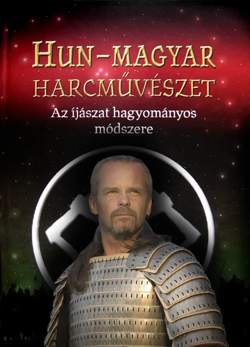

A 2010. augusztusában megjelnt könyv kiváló folytatása a 2005-ben napvilágot látott " LÓHÁTON FEGYVERBEN " - című gondolatébresztő munkának. A szerző nem változtatott szórakoztató, mégis jól értelmezhető stílusán, ezúttal azonban sokkal elmélyültebb és alaposabb szakirodalmat tár az olvasók elé. Másfél évtizednyi gyakorlati régészeti kutatómunka eredményeit. A tartalmat néhány ponton unalmas magyarázatok helyett rövid, szemléltető történetekkel tarkította és elismert társszerzők közreműködésével több nézőpontból láttatja. A könyv kiváló olvasmány a történelem és a harcművészetek iránt érdeklődők számára. Segítséget nyújt az íjászat gyakorlóinak, egyéb sportfoglalkozásokhoz, hagyományőrző munkákhoz. Érdekes információkat tartalmaz az irodalom, képzőművészet, művészettörténet, biológia, és természetismeret témaköreihez. Mindezt igen gazdag képanyag, szemléltető ábrák és térképek egészítik ki 450 színes A4-es oldalon.
Az olvasók nem csalódnak az elméletektől mentes tényösszeállításban, mely új korszakot nyit a magyar történelemszemléletben, visszaadva büszkeségünket, valamint helyes önértékelésünket.Néhány példány kedvezményes áron még megrendelhető a
LOVASHARC @ GMAIL.HU - emailcímen.
